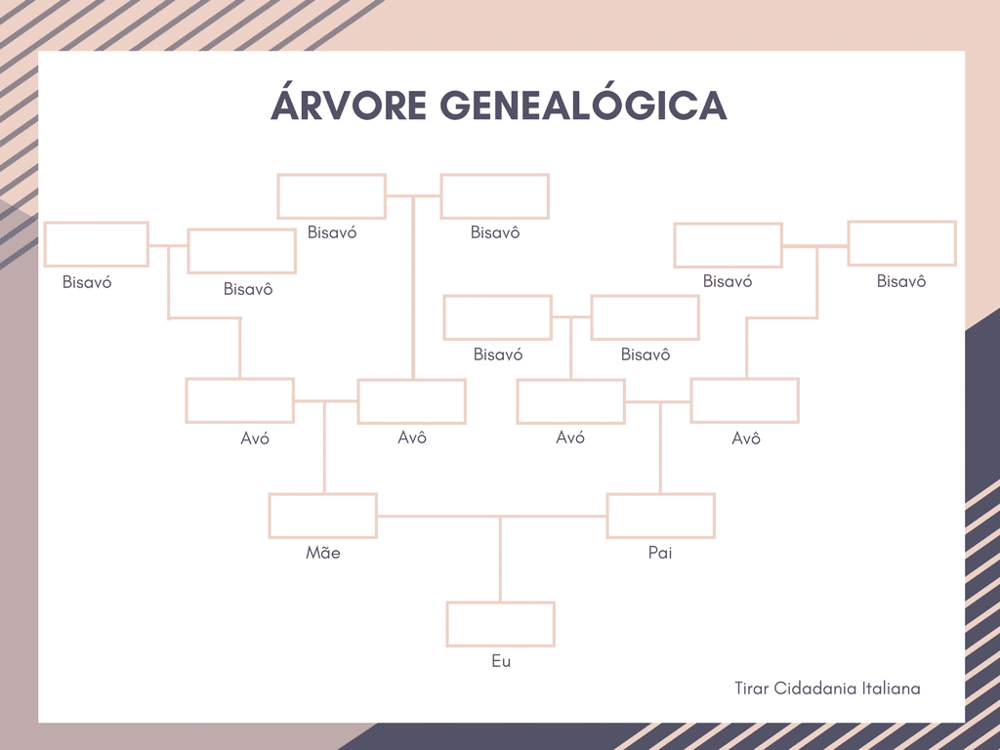

Influência dos pais na nossa vida
OA árvore genealógica é uma representação visual das relações familiares, mostrando como os indivíduos estão conectados através das gerações. Ela permite mapear a ascendência de uma pessoa, desde seus avós, bisavós e outros parentes, até chegar à geração atual. As árvores genealógicas ajudam a entender as ligações entre membros da família e podem incluir informações como datas de nascimento, casamentos e falecimentos.
